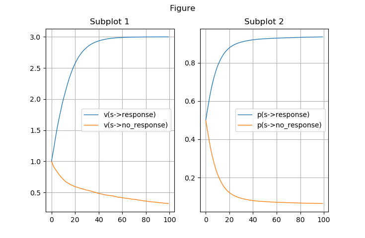
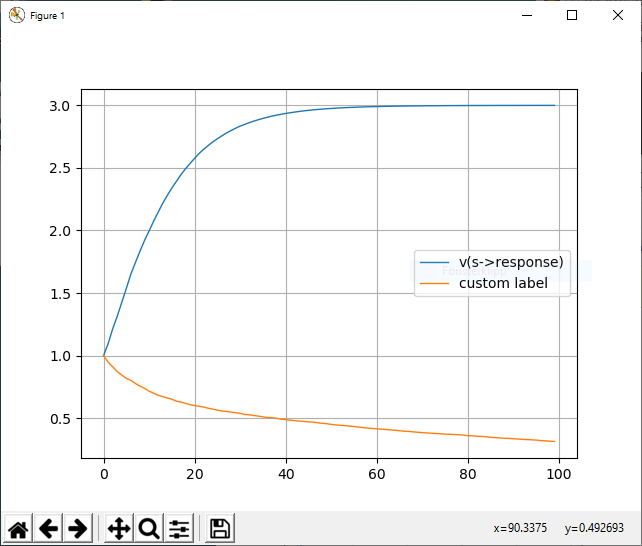
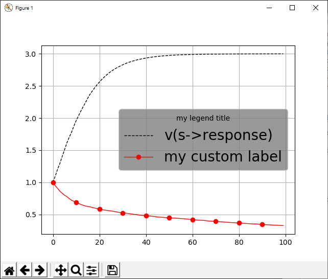

Postprocessing¶
The postprocessing stage of a script processes the data from a finished simulation, for example plotting or exporting the value of the agents’ state variables (v-values or w-values).
The postprocessing commands are the following:
Command |
Description |
Affected by parameters |
|---|---|---|
Creates a figure window |
None |
|
Creates a subplot within the current figure window |
None |
|
Creates a legend for all plotted lines in the current subplot |
None |
|
Plots a v-value |
||
Plots a vss-value (only in the
Rescorla-Wagner mechanism
|
||
Plots the probabilitiy to respond with a
certain behavior to a certain stimulus
|
||
Plots a w-value |
||
Plots the number of occurrences of a certain
stimulus/behavior or a chain
stimulus->behavior->stimulus->... orbehavior->stimulus->behavior->... |
runlabel, xscale, xscale_match, phases, subject, cumulative, match |
|
Exports the values of a @vplot |
||
Exports the values of a @vssplot |
||
Exports the values of a @pplot |
||
Exports the values of a @wplot |
||
Exports the values of a @nplot |
||
Exports the history of stimuli and responses |
The below plots show the components of a plot window:
@figure¶
Creates a new figure window.
Syntax:
@figure
@figure figure_title
@figure figure_title figure_parameters
@figure figure_parameters
where
figure_titleis an optional title of the figure (any string),figure_parametersis an optional specification of MatplotlibFigureparameters controlling figure size, colors, etc. of the format{param1:value1, param2:value2, ...}. See figure_parameters for the supported figure parameters.
Note
If a plot command or a @subplot command is issued without a preceding @figure command, a default figure window will automatically be created.
Example 1¶
@figure
creates a default figure without title and with the default Matplotlib Figure parameters.
Example 2¶
@figure This is the title
creates a figure with the title “This is the title” and with the default Matplotlib Figure parameters:
{kind=link}
{kind=link}
{kind=link}
@subplot¶
The command @subplot creates an axis within a figure in which to make plots using any of the plotting commands (@vplot, @wplot, etc.)
Syntax:
@subplot pos
@subplot pos subplot_title
@subplot pos subplot_title subplot_parameters
posdescribes the position of the subplot within the figure. It is a 3-digit integer: (nrows)(ncols)(index). The subplot will take the position index on a grid with nrows rows and ncols columns. index starts at 1 in the upper left corner and increases to the right.subplot_parametersis an optional specification of MatplotlibSubplotparameters controlling for example the background color, in the format{param1:value1, param2:value2, ...}. See subplot parameters for the supported subplot parameters.
Useful Subplot parameters to control the appearance of the subplot include
xlim(The min- and max value of the x-axis)ylim(The min- and max value of the y-axis)xlabel(The label of the x-axis)ylabel(The label of the y-axis)
stated as:
{'xlim':[xmin,xmax], 'ylim':[ymin,ymax], 'xlabel':'x-axis label', 'ylabel':'y-axis label'}
where xmin, xmax, ymin, and ymax are numbers.
Note
If a plot command is issued without a preceding @subplot command, a default subplot axis will automatically be created (corresponding to @subplot 111).
{kind=link}
@legend¶
The command @legend creates a legend with labels for each plotted curve in the last created subplot.
For the labels, the legend uses default descriptive labels (that depends on the type of plot),
but these may be overridden by custom labels using the label parameter to the plotting commands.
Syntax:
@legend
@legend legend_parameters
where
legend_parameters is an optional specification of Matplotlib Legend parameters controlling for example the frame and background colors, in the format {param1:value1, param2:value2, ...}. See legend parameters for the supported legend parameters.
Example 1¶
Running this script:
n_subjects = 100
mechanism = sr
behaviors = response, no_response
stimulus_elements = background, s, reward
start_v = default:1
alpha_v = 0.1
u = reward:3, default:0
@PHASE training stop: s==100
new_trial s | response: REWARD | NO_REWARD
REWARD reward | new_trial
NO_REWARD background | new_trial
@run training
xscale = s
# Postprocessing commands
@vplot s->response
@vplot s->no_response {'label':'custom label'}
@legend
creates the following plot:
{kind=link}
Example 2¶
With the same simulation as in Example 1 but the following postprocessing commands:
@vplot s->response {'linestyle':'--', 'color':'black'}
@vplot s->no_response {'label':'my custom label', 'marker':'o', 'color':'red','markevery':10}
@legend {'title':'my legend title', 'fontsize':20, 'facecolor':'grey'}
creates the following figure:
{kind=link}
@vplot¶
The command @vplot plots a v-value (the associative strength between a stimulus element and a behavior).
Syntax:
@vplot e->b
@vplot e->b line_parameters
plots the associative strength between the stimulus element e and the behavior b, and line_parameters are Line2D parameters.
@vssplot¶
The command @vssplot plots a vss-value (the associative strength between two stimulus elements).
Note
Only the Rescorla-Wagner learning mechanism has vss-values, so the command @vssplot is only
applicable when mechnism=rw.
Syntax:
@vssplot e1->e2
@vssplot e1->e2 line_parameters
plots the associative strength between the stimulus elements e1 and e2, and line_parameters are Line2D parameters.
@pplot¶
The command @pplot plots the probability of responding with a certain behavior to a certain stimulus,
according to The decision function.
Syntax:
@pplot s->b
@pplot s->b line_parameters
plots the probability of responding with b to the stimulus s, and line_parameters are Line2D parameters.
@wplot¶
The command @wplot plots a w-value (the conditional reinforcement for a stimulus element) for the mechanisms that support this (Guided associative learning and Actor-critic).
Syntax:
@wplot e
@wplot e line_parameters
plots the conditional reinforcement value for the stimulus element e, and line_parameters are Line2D parameters.
@nplot¶
The command @nplot plots the number of occurrences of a stimulus, a behavior, or a chain stimulus->behavior->stimulus->...
or behavior->stimulus->behavior->... in the history of stimulus-response pairs during the simulation, and line_parameters are Line2D parameters.
Syntax:
@nplot stimulus
@nplot behavior
@nplot stimulus1->behavior1->stimulus2->...
@nplot behavior1->stimulus1->behavior2->...
@nplot ... line_parameters
where stimulus is a stimulus, i.e. in general a comma-separated list of stimulus elements, behavior is a behavior, and line_parameters are Line2D parameters.
cumulative¶
The parameter cumulative can have the values on or off and affects @nplot input in the following way:
If cumulative is off:
If
xscaleisall: At each point (stimulus or response) in the history, the y-value is 1 ifinputmatches the simulation sequence at that point, and 0 otherwise.If
xscaleis notall: The y-value shows the number of occurrences ofinputbetween each point (stimulus or response) in the history wherexscalematches the simulation sequence. For example, the y-value at \(x=1\) is the number of occurrences ofinputbetween the first and the second occurrence ofinput, and the y-value at \(x=2\) is the number of occurrences ofinputbetween the second and the third, etc.
If cumulative is on, the values above are added cumulatively at each x-value. For example, the value at \(x=4\) shows the sum of
the values at \(x=0\), \(x=1\), \(x=2\), and \(x=3\).
Note
With multiple subjects and subject=average the plotting commands (including @nplot) renders the average y-value of all subjects, which means that the y-value can be between 0 and 1 even if the y-value for each individual subject is 0 or 1.
Example¶
With the combination xscale=s (for some stimulus s), cumulative=off, and n_subjects>1:
@pplot s->b
shows, at each exposure of s, the probability to respond with the behavior b to the stimulus s, whereas:
@nplot s->b
shows, at each exposure of s, the empirical average (over all agents) fraction of times when an agent responded with b to s in the simulation:
n_subjects = 500
mechanism = SR
behaviors = respond,ignore
stimulus_elements = s, reward
start_v = s->ignore:0, default:-1
alpha_v = 0.1
beta = 1
u = reward:2, default:0
@phase instrumental_conditioning stop:s=100
STIMULUS s | respond: REWARD | STIMULUS
REWARD reward | STIMULUS
@run instrumental_conditioning
xscale = s
cumulative = off
@nplot s->respond
@pplot s->respond
@legend
Line2D parameters¶
The input line_parameters to the plotting commands
is an optional specification of Matplotlib Line2D parameters controlling for example line color and line style, in the format {param1:value1, param2:value2, ...}. See Line2D parameters for the supported Line2D parameters.
Use the Line2D parameter label to set a custom label for the legend (produced with @legend) to the plotted line.
Useful Line2D parameters to control the appearance of the plot include color, linestyle, marker, markevery.
Exporting data to file¶
The data-exporting commands @vexport, @wexport, @pexport, and @nexport exports to a csv-file the data that is plotted with the
plotting commads @vplot, @wplot, @pplot, and @nplot, respectively. Therefore the same parameters
that affect the plot also affect the exported data (for example xscale, phases, subject, runlabel, etc.)
In addition, the parameter filename is required to all exporting commands.
The command @hexport simply exports the sequence of alternating stimuli and responses for the @run specified with the parameter runlabel. There is one sequence for each subject (regardless of the value of the parameter subject). The exported data with @hexport is not affected by any other parameter.
The destination file is specified with the parameter filename.
Note
If the specified file already exists, the existing file will be overwritten without warning.
Format of the csv-file¶
The data export commands @vexport, @wexport, @pexport, and @nexport exports the data as a csv-file with two or more columns. The first column, with title “x” contains step numbers (corresponding to the x-axis in the corresponding plot command). The second column onwards contains the data for the specified quantity for each subject (controlled by the subject parameter). For example, after the commands:
n_subjects = 5
subject = all
filename = my_file.csv
@vexport s->b
the first line, containing the headings, in the file my_file.csv looks like this:
"x","v(s->b) subject 0","v(s->b) subject 1","v(s->b) subject 2","v(s->b) subject 3","v(s->b) subject 4"
If instead subject = average, the first line will look like this:
"x","v(s->b)"
The remaining lines contain comma-separated values for the quantities in the heading. An example csv-file
exported with @vexport s->response may look like this:
"x","v(s->response) subject 0","v(s->response) subject 1","v(s->response) subject 2","v(s->response) subject 3","v(s->response) subject 4"
0,1,1,1,1,1
1,1.2,1.2,1.2,1,1
2,1.2,1.2,1.2,1,1
3,1.38,1.2,1.38,1.2,1.2
4,1.38,1.2,1.38,1.2,1.2
5,1.38,1.38,1.5419999999999998,1.38,1.2
6,1.38,1.38,1.5419999999999998,1.38,1.2
7,1.5419999999999998,1.38,1.6877999999999997,1.38,1.38
8,1.5419999999999998,1.38,1.6877999999999997,1.38,1.38
9,1.6877999999999997,1.5419999999999998,1.8190199999999999,1.5419999999999998,1.38
The @hexport command exports the sequence of alternating stimuli and responses for each subject, and has therefore a different format. See @hexport.
@vexport¶
@vexport exports the data plotted by @vplot to the csv-file specified with the parameter filename.
Syntax:
filename = my_file.csv
@vexport e->b
See also Format of the csv-file.
@vssexport¶
@vssexport exports the data plotted by @vssplot to the csv-file specified with the parameter filename.
Note
Only the Rescorla-Wagner learning mechanism has vss-values, so the command @vssplot is only
applicable when mechnism=rw.
Syntax:
filename = my_file.csv
@vssexport e1->e2
See also Format of the csv-file.
@pexport¶
@pexport exports the data plotted by @pplot to the csv-file specified with the parameter filename.
Syntax:
filename = my_file.csv
@pexport s->b
See also Format of the csv-file.
@wexport¶
@wexport exports the data plotted by @wplot to the csv-file specified with the parameter filename.
Syntax:
filename = my_file.csv
@vexport e
See also Format of the csv-file.
@nexport¶
@nexport exports the data plotted by @nplot to the csv-file specified with the parameter filename.
Syntax:
filename = my_file.csv
@nexport stimulus
@nexport behavior
@nexport stimulus1->behavior1->stimulus2->...
@nexport behavior1->stimulus1->behavior2->...
See also Format of the csv-file.
@hexport¶
The @hexport command exports a csv-file with three or more columns. Column 1 contains step numbers. Columns 2 and 3 contains the stimulus and response, respectively, for subject 1. Column 4 and 5 contains the stimulus and response, respectively, for subject 2, etc:
"step","stimulus subject 0","response subject 0","stimulus subject 1","response subject 1","stimulus subject 2","response subject 2",...
Note
All subjects are always included in the output file from @hexport.